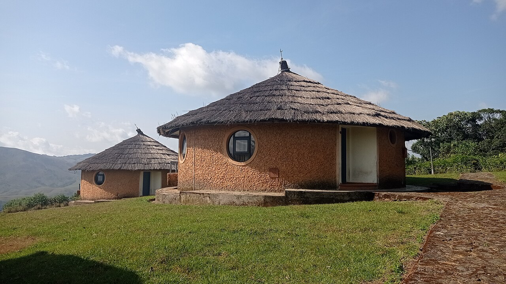

Places to Stay
Choose the type of stay that works for your trip.

Hotels
There are many small, family-owned hotels.
Ask about hotelsFour-star resort
Taniti has one large, four-star resort.
Ask about the resortBed and breakfasts
The island has a growing number of bed and breakfasts.
Ask about bed and breakfastsHostel
An inexpensive hostel is available for visitors.
Ask about the hostelPlanning your stay
All lodging is regulated and regularly inspected by the Tanitian government. Specific prices, availability, and provider booking links were not supplied. Confirm these details with your chosen provider before traveling.
Stay inquiry
This practice form shows how a stay inquiry would work. It does not contact a hotel or make a reservation.